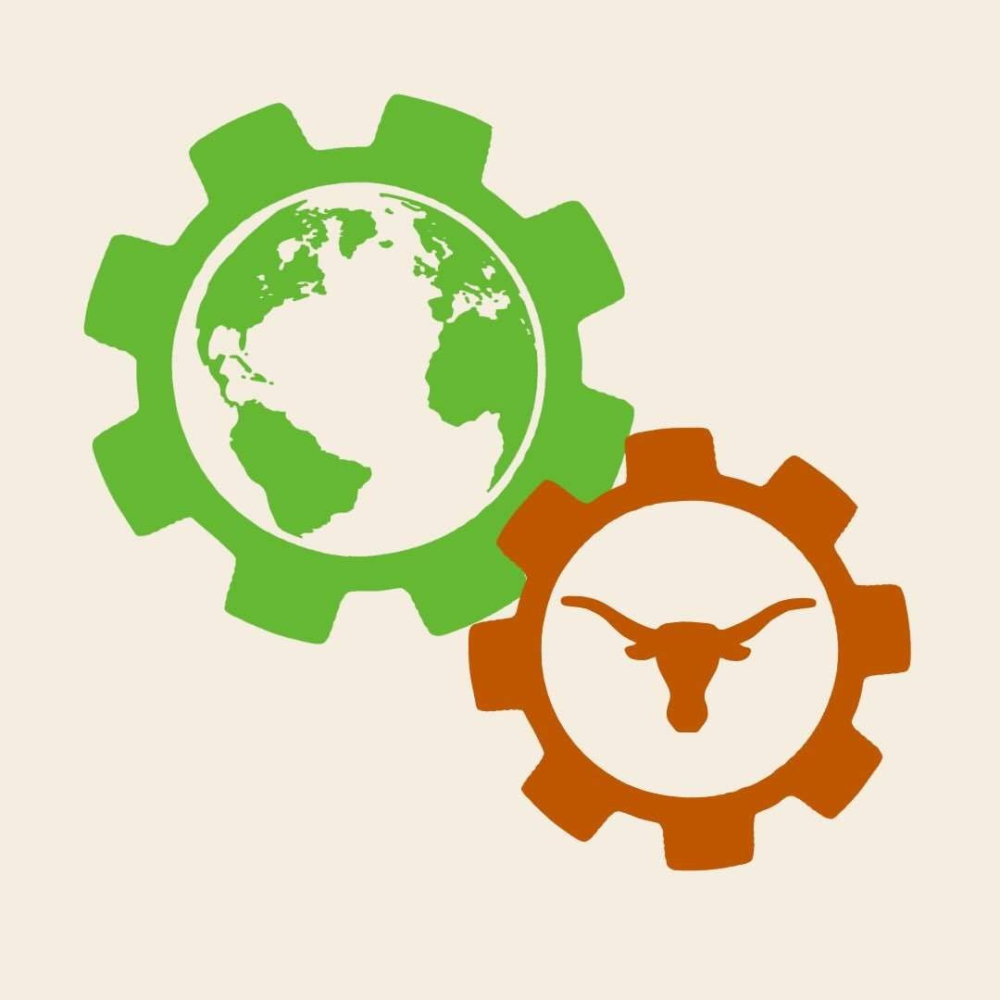

Build
Work on interdisciplinary projects addressing real environmental and community challenges.
Engineers for a Sustainable World
A student community fostering environmental, social, and economic sustainability.
Who we are
Engineers for a Sustainable World at UT Austin brings students together to turn ideas into meaningful environmental and social impact.
Whether you're interested in engineering, sustainability, community service, design, or simply meeting people who care about the world around them, there is a place for you here.

Work on interdisciplinary projects addressing real environmental and community challenges.
Develop technical, professional, and leadership skills alongside students from across UT.
Find a community of people interested in sustainability, service, engineering, and the outdoors.
See sustainability beyond the classroom through events, service, speakers, projects, and experiences.
Projects / outdoors / community
Our perspective
“The world is our classroom, our community, and our responsibility.”
ESW connects technical work with the people and environments affected by it.
What we're building
Student-led teams tackling sustainability challenges through engineering, design, research, and community partnerships.
Come hang out
Meetings, workshops, project sessions, service, and social events.
Life outside the classroom
ESW is also about finding your people, exploring Austin, spending time outdoors, and building friendships.
Hiking / outdoors
ESW community
Project work
Meet the team
We're students too. Reach out, ask questions, or come say hello at our next meeting.
Find your place
ESW is open to students of all majors and experience levels.